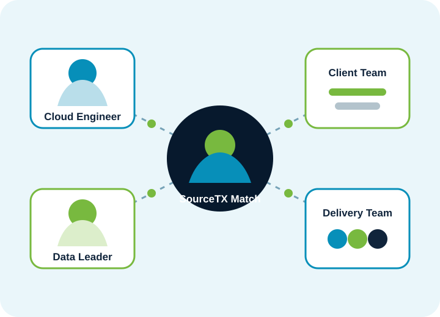

Application Management
Incident resolution, enhancements, release support, monitoring, and service reporting for business-critical applications.
SourceTX combines specialized people with practical delivery models. Engage one expert, assemble a project team, strengthen a recruiting program, or add ongoing operational support.

Every engagement is shaped around the business outcome, current environment, required skills, and the level of ownership you need from us.
Contract staffing, direct hire, RPO, payrolling, executive search, and flexible team augmentation.
Explore workforce solutions → 02Cloud strategy, migration, platform engineering, DevOps, SRE, infrastructure operations, and cost optimization.
Explore cloud services → 03Data platforms, engineering, BI, machine learning, generative AI, governance, and intelligent automation.
Explore data and AI → 04Product engineering, modernization, APIs, mobile and web development, integration, ERP, and CRM expertise.
Explore application services → 05Security engineering, IAM, governance, testing automation, performance engineering, and release assurance.
Explore security and quality → 06Application support, infrastructure monitoring, service management, operations analytics, and continuous improvement.
Explore managed services →SourceTX helps organizations secure the right mix of technical depth, industry context, communication skills, and availability.


Move from fragmented infrastructure to secure, automated platforms that improve delivery speed and operational visibility.
We help build the foundations, pipelines, models, controls, and adoption practices needed to create durable value from data and AI.

 API-first
Cloud-native
User-centered
API-first
Cloud-native
User-centered
From new digital products to legacy modernization, SourceTX provides engineers and delivery leaders across the complete application lifecycle.
Build security and quality into architecture, engineering, delivery pipelines, and daily operations — not as last-minute checkpoints.

A structured support model can reduce operational friction while keeping accountability, performance, and improvement visible.
Incident resolution, enhancements, release support, monitoring, and service reporting for business-critical applications.
Monitoring, patching, backup, capacity, performance, automation, and operational governance across hybrid environments.
Pipeline monitoring, data-quality triage, platform administration, SLA tracking, and recurring performance optimization.
ITSM process improvement, knowledge management, reporting, problem management, and service transition support.
Add focused expertise to an existing team for a specific role, capability gap, or project phase.
Best for Targeted augmentation and urgent skillsA coordinated group of specialists works within your governance while SourceTX supports staffing continuity.
Best for Programs that need scalable capacityA defined team, delivery plan, milestones, and governance structure aligned to agreed outcomes.
Best for Modernization, migration, and product initiativesOngoing operational ownership with service levels, reporting, knowledge management, and improvement planning.
Best for Stable operations and continuous optimizationSourceTX can tailor skill profiles, compliance considerations, and delivery practices to the environment in which the work happens.
Share your goals, constraints, timeline, and current team structure. We will recommend a practical path forward.